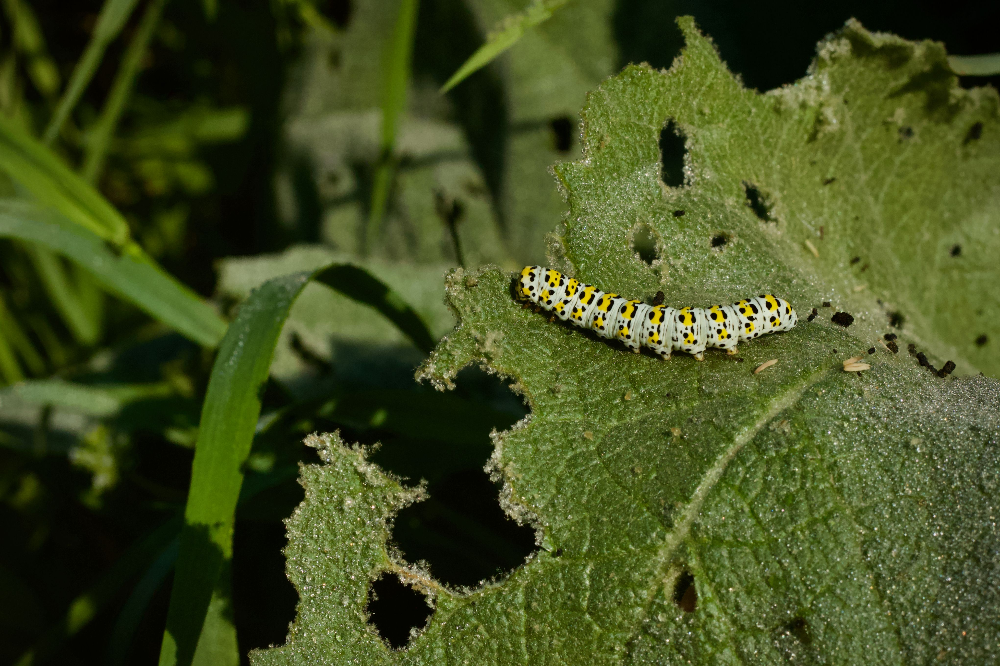
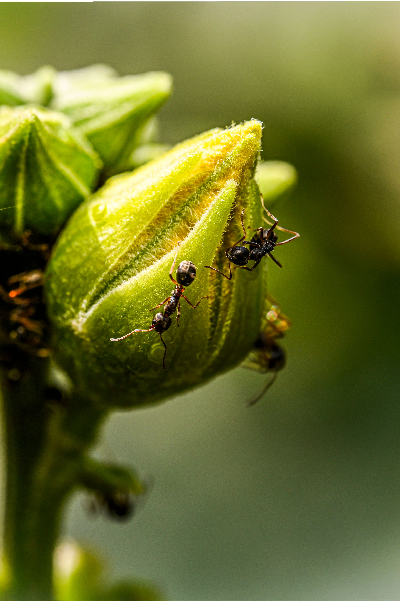

🐛 Imidacloprido
É absorvido pelas raízes ou folhas e circula por toda a seiva da planta, protegendo-a de dentro para fora.

🐜 Malathion
Ele bloqueia de forma irreversível a enzima chamada acetilcolinesterase, causa uma pane elétrica interna.

🦋 Pirróis
Atuam na respiração celular dos insetos impedindo que as células produzam energia.